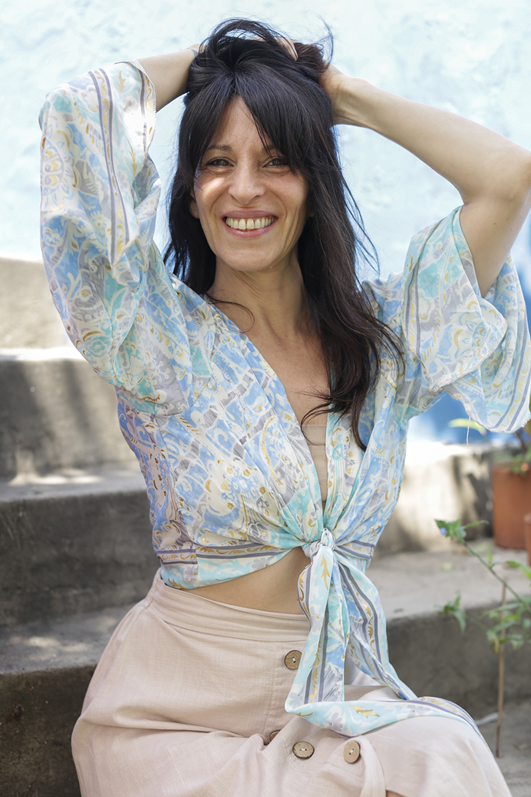
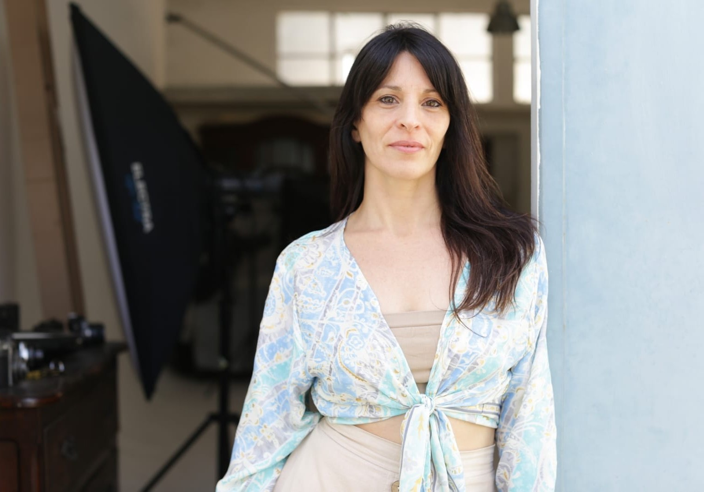

Conoceme
Hola, soy Jessica María Carmona. Desde hace muchos años, he elegido abrazar mi espíritu
emprendedor y creativo. La combinación de la creatividad de mi madre y la influencia de mi padre me han
dado la base que ha influenciado y enriquecido mi personalidad y mis proyectos en este camino.
Soy la primera hija de madre italiana, una artista innata y autodidacta a quien siempre he admirado por
su habilidad para transformar lo simple en magia a través de sus manos y su forma de dar amor. Por otro
lado, mi padre, descendiente de españoles, ha sido comerciante toda su vida, y de él he heredado la
fuerza y los valores que me han impulsado siempre a seguir adelante.

Nací en la ciudad de Buenos Aires, bajo el sol en Acuario, con ascendente y luna en Aries, y Venus en
Piscis. Desde mi adolescencia, marcada por la curiosidad, la autenticidad y un toque de rebeldía,
comencé un viaje de autoconocimiento y autodescubrimiento, con aciertos y desaciertos, encuentros y
desencuentros, que ha sido una valiosa escuela de vida, repleta de lecciones y oportunidades de
crecimiento.
Mi interés por la lectura y la filosofía me llevó a cuestionar los misterios de la existencia y la
naturaleza del ser humano. Fue así como decidí hace 30 años ingresar a la universidad para estudiar
psicología, con la esperanza de encontrar algunas respuestas. Durante ese largo tiempo, también exploré
diferentes rincones del mundo y me sumergí en las artes expresivas que tanto me inspiraban.
En uno de mis viajes, adquirí un libro que abordaba la sabiduría de Oriente. Fue entonces cuando conecté
por primera vez con el budismo, leía sobre meditación y filosofía espiritual sin tener un conocimiento
profundo, pero sin darme cuenta, planté una semilla que, con el tiempo, florecería en mi vida.
Me desempeñé como bailarina, profesora de danzas y metodos de acondicionamiento psicofisico. Durante muchos años trabaje en el campo de la salud a traves de las artes expresivas, del movimiento y danzaterapia. Sin embargo, un desequilibrio físico que afectó mi audición y mi columna vertebral marcó un antes y un después en mi estilo de vida. Fue en ese momento que descubrí el Yoga.
A través de esta disciplina, aprendí prácticas que me ayudaron a restaurar mi salud de manera progresiva y a recuperar mi equilibrio interior. Me certifiqué como Instructora de Yoga, especializándome en yoga terapéutico, técnicas de respiración, relajación y meditación, bajo la guía de maestros nacionales e internacionales que transmiten la rica tradición del sistema de enseñanza integral de India.
Recuerdo que un día, un maestro me dejó una enseñanza que jamás olvidaré: “Jessica, no te quedes en lo físico… ve y busca más allá”. Estas palabras reafirmaron la transformación sutil que estaba experimentando a través de las prácticas y me inspiraron a compartir este camino con otros.

En la actualidad, mi propósito es integrar todos estos años de trabajo de consciencia con mi autobiografía y mis estudios sobre el Árbol Genealógico y las Constelaciones Familiares. Todo ello en el marco de mi Proyecto CreAndo Armonía. Mi objetivo es dejar de definirme con una única identidad y aprender a expandirme, contribuyendo y creando espacios que fomenten el desarrollo y empoderamiento personal.
Si has llegado hasta aqui, te invito a unirte a este viaje que yo misma he iniciado, transitado y comprobado hacia una vida más plena y en armonía con vos mismo.